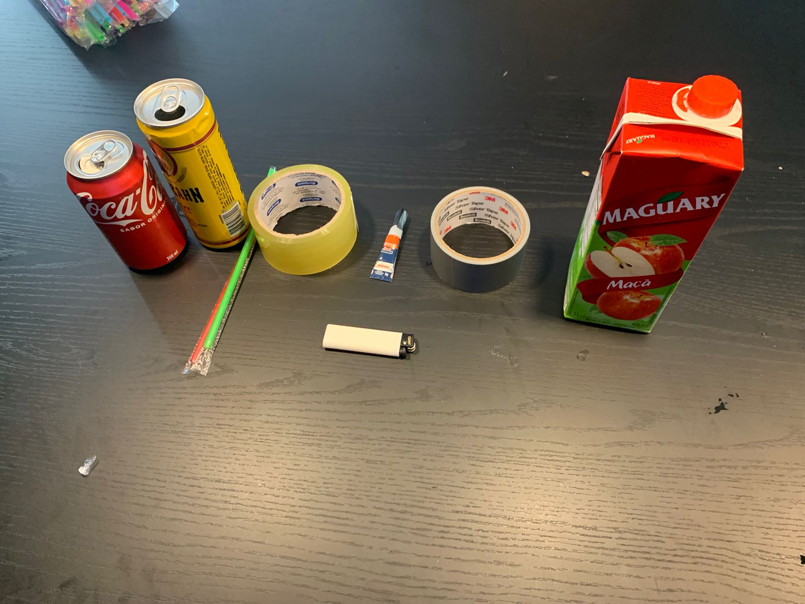
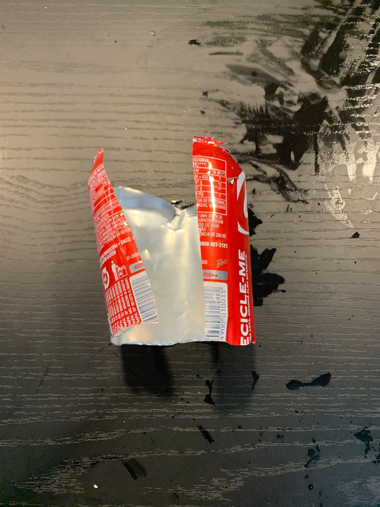
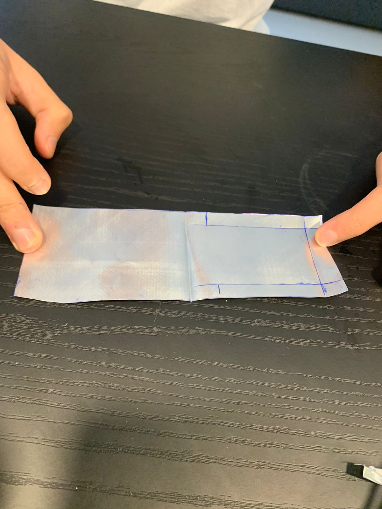
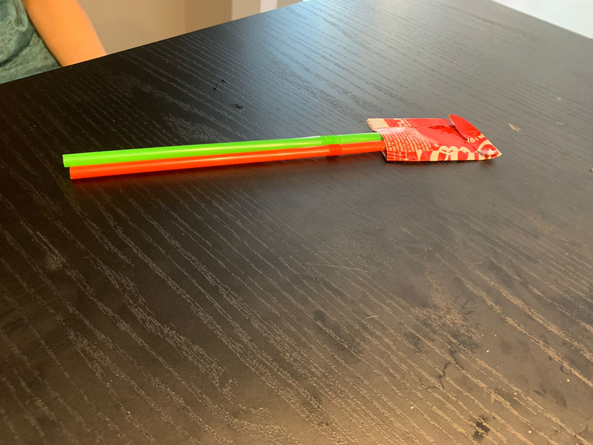

Passo 4 :
Com a caixa de suco, cortamos ao meio e um furo no meio do barquinho para que possa passar o canudo. Optamos por enfeitar o barquinho, então com a outra metade, cortamos ela e fizemos essa cabine do barquinho

1 caixa de suco; 1 latinha, 1 vela, 1 tapa de pote(tamanho médio), 3 canudos, 1 Super monder, 1 fita, Tesoura, Régua,Caneta e Esqueiro.
Primeiro cortamos a latinha em cima e em baixo, após isso cortaremos no meio
Com uma caneca e uma régua, faça as seguintes marcações e depois recorte. Logo a pós, dobre no meio só para deixar uma pequena marcação. Em uma das parte vc fará novamente um retângulo, porém com a marcação de 1cm nas bordas em seguinte recorte novamente
Pegue os dois canudos coloque no meio do metal e cole e feche o metal, lacrando o canudo no metal, e tente fechar todas as passagens de ar do metal, deixando só o canudo como passagem de ar
Na nosso primeira tentativa de saber se conseguimos fechar tudo, deu totalmente errado, então voltamos a passar fita e cola pra fechar essas passagens.Na segunda tentativa, conseguimos diminuir a quantidades de bolhas, voltamos a repetir o mesmo processo
Com a caixa de suco, cortamos ao meio e um furo no meio do barquinho para que possa passar o canudo. Optamos por enfeitar o barquinho, então com a outra metade, cortamos ela e fizemos essa cabine do barquinho
Como podemos ver nesse video o barco esta andando